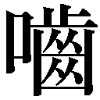

🏠
日
月
縦書き／横書き
| 枡野俊明の心がふっと軽くなる「禅」の話【編集版】 |
| 枡野 俊明 |
| (2015) |
|
この本は縦書きでレイアウトされています。
また、ご覧になる機種により、表示の差が認められることがあります。
はじめに
ちょっと「習慣」を変えるだけ。ちょっと「見方」を変えるだけ。
それが禅的
生活
古都の神社やお寺に出向き、しんと静まり返った庭を眺める。
汗を流して山に登り、頂上からの景色を一望する。
青く透き通った海を前に、ただゆっくりと
佇
む──。
あわただしい日常を離れ、非日常に身を置いた瞬間、すーっと心が洗われるような気持ちになったことはありませんか。
心が軽くなり、体の底からじんわりと力が湧いてくる。日常の悩みやストレスが一瞬で消え、ただ生きている自分を感じる瞬間です。
今、多くの人はどう生きるべきかに迷い、悩み、足場を失っています。だからこそ、非日常を求め、心の疲れをリセットしようとする。
でも。でも、なのです。
一度リセットしてみたところで、非日常はやっぱり「日常に
非
ず」。
いつもの生活に戻ってみれば、心はささくれるし、ストレスもたまる。重くなった心を抱えて、また非日常へ──そんな堂々めぐりをしていませんか。
いくら「生きにくい」と嘆いてみても、世の中は簡単に変わらない。
世の中が思い通りにいかないのであれば、いっそ自分を変えてしまおう。
そして、どんな世の中であっても、ラクに、のびやかに生きてみよう。
わざわざ非日常に出かけなくても、毎日の生活をちょっと変えるだけで、いつも身軽に生きる方法はないものか。
それが本書の「
禅的
生活」です。
生活を変えると言っても、難しいことではありません。
ちょっと「習慣」を変えるだけ。ちょっと「見方」を変えるだけ。
京都や奈良に行かなくても、富士山に登らなくても、家の近くに海がなくても、本当にちょっとしたことで、非日常を味わうことは可能なのです。
その方法を、本書では「禅」の力を借りて紹介していきます。
「禅」とは、人間がこの世で生きていくための根本となる教えです。
つまり、人が幸せに生きるための習慣であり、考え方であり、ヒント。深くてやさしい「生きる知恵」の宝庫なのです。
禅を象徴するのが「
不
立
文
字
、
教
外
別
伝
、
直
指
人
心
、
見
性
成
仏
」という教え。文字や言葉にとらわれることなく、今、ここにいる自分の「本来の姿」に出会うことです。
他人の価値観に振り回されないように、余計な悩みを抱えないように、無駄なものをそぎ落とし、限りなくシンプルに生きる。それが、"禅スタイル"。
シンプルに考える癖をつけると、悩みがすっと消える。
シンプルな習慣を身につければ、生きるのはずっとラクになる。
生きにくい世の中だからこそ、「禅」が生きるヒントを与えてくれそうです。
「禅」は昨今、日本だけでなく海外でも注目を集めています。
私は禅寺の住職を務めるとともに、庭園デザイナーとしても活動していますが、禅宗の寺の庭園ばかりでなく、ホテルの庭園やあるいは海外の大使館の庭なども手がけてきました。「禅の庭」は日本人ばかりでなく、宗派を越えて海外の人たちの心をもとらえているのです。
「禅とは」なんてしかめっ面をしなくても、その庭の前に佇むだけで心が洗われるような気持ちになる。ざわざわと波立っていた心が、ふっと静まり出す。
「禅」の思想を説いた書物を何冊も読むより、「禅の庭」と対面するほうが、その心はずっと伝わるのでしょう。
だから本書では、実践的な内容を紹介しています。頭だけで理解するのでなく、ちょっとした"修行"気分で実践してみてほしいと思います。
いつでもそばに置いておいて、悩みや不安が頭をもたげてきたときに、ぜひめくってみてください。
きっと、探している「答え」がそこにあります。
合掌
枡野俊明
もくじ
はじめに
ちょっと「習慣」を変えるだけ。ちょっと「見方」を変えるだけ。
それが、
禅的
生活
【「今日のあなた」を元気にする30
項】
第１章
「習慣」をちょっと変えてみる
１
・ボーッとする時間をもつ
２
・十五分、早起きしてみる
３
・朝の空気をしっかり味わう
４
・脱いだ靴を揃える
５
・いらないものを捨てる
６・デスクの上を整える
７・一杯のコーヒーを丁寧に淹れる
８・字を丁寧に書く
９・大きな声を出してみる
10
・食事をおろそかにしない
11
・食事では、一口ごとに箸を置く
12
・野菜断食のすすめ
13
・好きな言葉を探す
14
・持ち物を減らす
15
・部屋をシンプルに整える
16
・ベランダに小さな庭をつくる
17
・裸足で生活してみる
18
・息をゆっくりと吐いてみる
19
・坐禅を組む
20
・立禅をする
21
・考えても仕方のないことは考えない
22
・気持ちを上手に切り替える
23
・ゆっくりと呼吸する
24
・手を合わせる
25
・ひとりの時間をもつ
26
・自分の手で自然に触れる
27
・夕焼けを眺めに行く
28
・今日できることは、今日やる
29
・眠る前は嫌なことを考えない
30
・今できることを一生懸命にやる
【生きる「自信」と「勇気」が湧く30
項】
第２章 ものの「見方」を変えてみる
31
・「もうひとりの自分」に気づく
32
・起こっていないことで悩まない
33
・仕事を楽しむ
34
・ただ没頭してみる
35
・「目の前のもの」にとらわれない
36
・人のせいにしない
37
・人と比べない
38
・自分にないものを求めない
39
・ときには、考えるのをやめてみる
40
・けじめをつける
41
・坐禅会に参加してみる
42
・一輪の花を育てる
43
・スタートを正す
44
・自分自身を大切にする
45
・シンプルに考える
46
・変わることを恐れない
47
・変化に「気づく」
48
・「考える」よりも「感じる」
49
・「もったいない」という心を忘れない
50
・ひとつの見方にとらわれない
51
・自分の頭で考える
52
・自分を信じる
53
・悩むより動く
54
・しなやかな心をもつ
55
・体を動かす
56
・時を待つ
57
・物との縁を大切にする
58
・ただ静かに座ってみる
59
・頭のなかを空っぽにしてみる
60
・「禅の庭」を楽しむ
【迷い・悩みに「答え」をくれる20
項】
第３章 人との「関わり方」を変えてみる
61
・人に尽くす
62
・「三毒」を捨てる
63
・「おかげさま」の気持ちをもつ
64
・理屈を押しつけない
65
・言葉でなく、心を伝える
66
・相手の長所に目を向ける
67
・ひとりの人と深くつき合う
68
・タイミングをよくする
69
・皆に好かれる必要はない
70
・無理に白黒つけない
71
・「あるがまま」を見る
72
・上手に距離を置く
73
・損得を考えない
74
・言葉だけにとらわれない
75
・人の意見に振り回されない
76
・信念をもつ
77
・庭と会話する
78
・人を喜ばせる
79
・家族が集まる日をつくる
80
・お年寄りの話を聞く
【どんな日も「最高の一日」にする20
項】
第４章 「今」「この瞬間」を変えてみる
81
・「今」を生きる
82
・平凡な一日にこそ、感謝する
83
・「守られている」ことを意識する
84
・前向きに受けとめる
85
・欲張らない
86
・物事を「善悪」で分けない
87
・事実は事実として受けとめる
88
・「答え」はひとつではない
89
・「方法」もひとつではない
90
・ひけらかさない
91
・お金に縛られない
92
・不安なときほど、自分を信じる
93
・季節の移ろいを感じる
94
・何かを育ててみる
95
・「自分の声」に耳を傾ける
96
・一日、一日を大事に生きる
97
・命を大切に使う
98
・準備を怠らない
99
・死にざまを考える
100
・「今」「このとき」に力を出し切る
編集協力／岩下賢作
【「今日のあなた」を元気にする30
項】
第１章
「習慣」をちょっと変えてみる
１
ボーッとする時間をもつ
──まずは「自分」を観察する
あわてず、焦らず、あるがままの自分で
皆さんは日々の生活のなかで、何も考えずにボーッとする時間がありますか。
「そんなに暇な時間なんかない」と言う人がほとんどではないでしょうか。
仕事に追われ、時間に追われ、生活に追われる日々。現代はなんと忙しいことか。目の前にあるやるべきことをこなすだけで精一杯の毎日。
そんな毎日にどっぷりと浸かっていると、知らず知らずのうちに、本当の自分の姿や、本当の幸福が見えなくなってしまいます。
一日のうちで、たった十分でもかまいません。何も考えずにボーッとする時間をつくってみてください。
周りのものにとらわれることなく、ただボーッとしてみる。
いろんなことが頭に浮かんでくるでしょうが、それらをどんどん頭の外へ流してみる。そうすると、移ろいでゆく大自然のなかに今、自分が生かされていることに気がつきます。何事にもとらわれない、純粋で素直な自分が顔を出します。
何も考えない時間。それこそが禅的生活の第一歩でもあるのです
２
十五分、早起きしてみる
──心に余裕がないときの処方箋
忙しいとは「心を亡くす」こと
時間に余裕がないと、心まで余裕をなくします。口を開けば「忙しい、時間がない」と言う。そう思うことで、さらに気持ちがせわしくなってくる。
でも、本当にそんなに忙しいのでしょうか。ただ自分で自分を急がせているだけではないでしょうか。
忙しいとは「心（
）を亡くす」と書きます。
時間がないから忙しいのではなく、心に余裕がないから忙しいのです。
忙しいときほど、いつもより十五分、早起きしてみてください。そして、背筋を伸ばし、
丹
田
──ざっくりと言えば下っ腹──でゆっくり呼吸をしてみてください。呼吸が整うと、自然と気持ちも静かに整います。
そして、ゆっくりとお茶やコーヒーを味わいながら、部屋の窓から空を眺める。小鳥たちのさえずりに耳を傾けてみる。
ただそれだけのことで、気持ちに余裕が生まれてくるから不思議。
十五分の早起きは、忙しさから解放される魔法です。
３
朝の空気をしっかり味わう
──お坊さんの長生きの秘訣、ここにあり
一日として同じ日はない
禅の修行をしている僧侶たちは、長寿の人が多いと言われています。
もちろん食生活や呼吸法などもその理由のひとつですが、何よりも規則正しい生活が精神的にも肉体的にもいい影響を与えているのだと思います。
私は毎朝五時には床を離れ、まずは朝の空気をいっぱいに吸い込みます。寺の本堂や客殿、
庫
裡
の雨戸を開けて回りながら、四季の移り変わりを体中で感じる。六時半からは朝のお勤めをし、朝食をいただく。そして、その日の仕事に従事するわけです。
毎日くるくると同じことをくり返しますが、一日として同じ日はありません。朝の空気の味、朝日が差し込む時間、頬をなでる風、木々の葉の色や空の色など、すべてが移ろいでゆく。朝は、こうした変化をしっかりと感じることができる時間です。
修行僧たちが、夜も明けぬうちから坐禅を組むのは、こうした自然の変化を体で感じるためです。
「暁
天
坐禅」
──朝一番の坐禅は、朝の美しい空気を吸い込むことで、心身をすこやかにしてくれる行なのです。
４
脱いだ靴を揃える
──すると、生き方が美しくなる
心の乱れは足元に表われる
昔から、家の玄関を見れば、その家庭の様子がわかると言われています。履物がきちっと揃えられているか、はたまた乱雑になっているか──ただそれだけで、住む人の心の状態がわかってしまうものです。
禅には
「脚
下
照
顧
」
という言葉があります。その意味は、自分の足元をよく見なさいということ。自分の足元が見えていない人は、自分自身が見えていない、ひいては、人生の行く先も見えていないということです。大げさに思われるかもしれませんが、こうした小さなことが実は、生き方に大きく影響しています。
家に帰ったら、玄関で脱いだ靴をきちんと揃える。食事に行って座敷に上がるときにも、靴をすっと揃える。たったこれだけのこと。三秒もあれば十分です。
しかしこうした習慣を身につけることで、不思議と生活すべてがきりっとしたものになる。生き方が美しくなる。人間とはそういうものなのです。
まずは自分の足元に目を向けてください。
靴を揃えるのは、次に踏み出す一歩のためでもあるのです。
５
いらないものを捨てる
──「心が洗われる」ってこういうこと
「得る」よりも「手放す」ことが先
私たちは、物事がうまくいかないとき、「何かが足りない」と思ってしまいがちです。でも、今の状況を変えたいなら、何かを「得る」よりもまず「手放す」ことが先。禅的生活の基本は、ここにあります。
執着を捨てる。思い込みを捨てる。持ち物を減らす。シンプルに生きるとは、心や体の荷物を捨てることでもあります。
涙を流したあとは、なぜか心がすーっとしますね。泣くことで、もやもやとした心のつかえがスカッと晴れる。また頑張ろうという気が湧いてくる。
洗心
──「心が洗われる」とはこういうことだったのかと実感します。
心の荷物でも、体の荷物でも、身の回りの荷物でも、手放す・捨てるという行為は、なかなか難しいものです。人との別れがつらいように、ときに痛みをともなうこともあるでしょう。
でも、物事の流れをよくし、軽やかに生きたいのであれば、まずは手放すことから始めてください。手放した瞬間、新たに入ってくるのは「豊かさ」です。
はじめに
禅語を活かして「シンプルに生きる」
今、私たちが生きている世の中は、「心の大そうじ」が必要な世の中だといえるのかもしれません。
一生懸命に頑張っているのに、何度も失敗してしまう。自分が置かれている環境に不満がある。どうしても、好きになれない人がいる......。
仕事でも人間関係でも、心に
塵
やホコリが積もっている人が大勢いるようです。
そんな現状を打破し、もっと楽に、ゆっくり生きるにはどうしたらいいか。
私は、なにも特別なことをしようと気負う必要はないと考えています。ただし、ちょっとした工夫は必要です。心に積もっている塵やホコリ、わだかまっている
澱
を取り除いてやる工夫。「禅語」には、そのためのヒントがぎっしり詰まっています。
「そうはいっても、禅語って、なんだか難しそう......」
みなさんは、禅語は何年も修行を積まなければ理解できないもの、という印象を持たれているのかもしれませんね。
たしかに、その奥行きの広さ、
懐
の深さでは、禅語の右に出るものはないでしょう。
しかし、同時に"シンプルである"ということも、禅語の大きな特徴なのです。
私の好きな禅語に、「
歩
歩
是
道
場
」というものがあります。
なにも特別な修行をする必要はない。食べることも寝ることも、人生を歩んでいるその一歩一歩が修行だということを、この禅語は教えています。
日々、さまざまな生活を送っているみなさんは、まさに修行の
真
っ
只
中
にいるのです。それはもちろん、心をきれいにするための修行。そう、「心の大そうじ」ですね。
本書に集めた禅語は、そんな修行──すなわち、日常生活のコツです。
たとえば、食後や休憩時間にお茶を飲むあいだは、仕事のことや、人づき合いの悩みをサッパリ忘れると決めておく。すると、あわただしい日々で重くなっていた心が、ふっと軽くなります。このことを教えてくれるのが、「
喫
茶
去
」という禅語です。
その他にも、職場での振る舞い方、食事や
挨
拶
の仕方、不安のしずめ方まで、すぐに実践できる"ちょっとした習慣"が満載です。
考えてみると、人は余計なことを考えたりするから、悩み、迷うのかもしれません。もっともっと、シンプルに生きてみませんか。禅語が教える「心の大そうじ」のコツはそのためにある、といってもいいでしょう。
禅語を活かした生活をすると、心が晴れやかになります。
悩んでいたことも「なぁんだ」と思えるようになります。
一日に一ページだけでいい、どこかで本書を開いてみてください。それだけで、今まで見えていた景色まで変わってくるかもしれません。
さあ、さっそく、「心の大そうじ」にとりかかってみましょう！
合掌
枡野俊明
もくじ
はじめに
禅語を活かして「シンプルに生きる」
【上手に「気持ちを整理する」禅のヒント】
１章
あなたの「心の荷物」をスッとおろすコツ
１
・もっと肩の力を抜く
２
・「心のホコリ」は簡単に払える
３
・嫌なことも嬉しいことも「一度忘れる」
４
・「当たり前のこと」をやればいい
５
・うまく言葉にできなくてもいい
６・身の丈
で生きる
７・「ほどほどに」生きる
８・「他人と違うこと」を恐れない
９・スカッとするほど大声を出す
10
・正解が一つとは限らない
11
・考え方を「ほんのちょっと」変える
12
・「まあ、お茶でもどうぞ」
13
・「やる」とか「やらない」とかこだわらない
14
・年をとるのも悪くない
15
・「すごい自分」を探さなくていい
16
・無理して答えを出そうとしない
17
・「損得抜き」で考えればもっと楽しめる
18
・寄り道をしたってかまわない
19
・空気を吸ってスッキリする
20
・運命にまかせきる
21
・すぐカッとならない
【毎日を「丁寧に生きる」禅のヒント】
２章 挨拶、食事、整頓......シンプル生活のすすめ
22
・食べることも、寝ることも「修行」
23
・「ご恩」を感じながら暮らす
24
・「昨日、何かあったのかな」と気にかける
25
・心を整えるには「足下から」
26
・汚れを磨くのではなく、心を磨く
27
・何事も「入り口」が肝心
28
・「一つの命」を何度でも生かす
29
・相手を思って料理する
30
・気持ちを込めて「いただきます」
31
・米一粒も「仏さまの恵み」
32
・無理に飾り立てようとしない
33
・「何でも自分でやる」という心意気
34
・「名
残
惜しさ」を見せて別れる
35
・「おすそわけの心」を持つ
36
・風の音を聴く
37
・季節の変わり目を「肌で感じる」
38
・小さなことを疎かにしない
【「人間関係がうまくいく」禅のヒント】
３章 すべての出会いは「かけがえのないもの」
39
・曇りのない目で見る
40
・競うのではなく「和
む」
41
・「伝えたいこと」ほど言葉にならない
42
・相手を一番「ほっとさせる言葉」
43
・人は「大きな○」でつながっている
44
・人は人を貫き、私は私を貫く
45
・人の上に立たなくてもいい
46
・「自分さえよければ」をやめる
47
・「ついていい
」もある
48
・息がピッタリ合うように「歩み寄る」
49
・人の話は「心で聞く」
50
・「いただいたご縁」を大事にする
51
・怨
み、憎しみは「ただの思い込み
」
52
・ライバルに手を差しのべる
53
・自分を大事に、人も大事に
54
・「得意なこと」を頑張ればいい
55
・家族とゆったり過ごす
56
・すべての出会いには意味がある
【「仕事の悩みが晴れる」禅のヒント】
４章 「頑張る」よりも、「心の持ち方」を変える
57
・天職は、探すのではなく「自分でつくる」
58
・自分から「限界」をつくらない
59
・不安はすぐに「安心」に変わる
60
・「真っ向勝負」をする
61
・「努力の成果」は他人が決めるもの
62
・仕事に「優劣」なんかない！
63
・コツコツやれば、必ず報われる
64
・目を向けるべきは「まず、自分の心」
65
・人を動かす前に、自分が動く
66
・「俺がやらなきゃ、誰がやる」
67
・心をもって心に伝える
68
・誰にでも「謙虚な気持ち」を
69
・忙しさの隙間にある「ほっとする瞬間」
70
・昨日と今日は必ず違う
71
・仕事も「道楽化」する
72
・「自然体」で臨む
73
・チャンスは突然やってくる
74
・一人ひとりに真心を込める
【「一生の支えになる」禅のヒント】
５章 こう考えれば、人生はけっして難しくない
75
・一日の終わりに、幸せを
みしめる
76
・物欲を「一枚一枚はがす」
77
・あるべきものが、あるべきところに、あるべきようにある
78
・水面
に映る月は流れない
79
・石にも心がある
80
・「心安らぐ散歩道」を見つける
81
・「無限に広がる世界」を感じる
82
・「何もない」から美しい
83
・「小さな自然」に身をおく
84
・「空っぽな心」で打ち込む
85
・気負わない、欲張らない
86
・水のように「しなやかに生きる」
87
・自分を信じて生きる
88
・走れなくても、歩き続ければいい
89
・人は裸で生まれ、裸で死ぬ
90
・悲しいときは、思いきり泣けばいい
91
・「道を示してくれる師」が必ずいる
92
・明けない夜はない
編集協力／岩下賢作
口絵写真／田畑みなお
本文ＤＴＰ／株式会社 Ｓｕｎ Ｆｕｅｒｚａ
【上手に「気持ちを整理する」禅のヒント】
第１章
あなたの「心の荷物」をスッとおろすコツ
１
もっと肩の力を抜く
────不
生
不
死
「生まれて死ぬ」──ただ、それだけ
生まれて、死ぬ──どんな人も、この摂理から逃れることはできません。だからこそ、少しでも長く生きることを願い、また、死ぬことに対して不安や恐れを抱くことにもなるのでしょう。
禅語に「不生不死」という言葉があります。生死は変えようのない絶対なるものだ、というのがその意味。ここに、生死をどう考えたらいいかのヒントがありそうです。
生も死も、私たちの手が及ばない絶対なるものなら、それについて思い悩んだりしたって仕方がない。摂理にまかせておくしかない、ということになりませんか。まかせきってしまえば、こだわる必要もなくなります。
「こんなふうに生きなくちゃ」とか「死ぬまでにこれだけはしておかなくては」といった"縛り"が、心から消え去っていくのです。
今この瞬間、自分が生きている。「それだけですごいじゃないか！」と思える。
その"すごい自分"を真剣に、そして、淡々と生きたらいい。禅の心に沿った肩の力が抜けた生き方とは、きっとそんなものだと思うのです。
２
「心のホコリ」は簡単に払える
────洗
心
寺や神社に行かなくてもできる「心を洗う」法
私たちの心には、気づかないうちに
塵
が積もっていきます。執着や欲などの
煩
悩
がその最たるものですね。放っておけば塵はいつか高く積もってしまう。だから、心を洗って清めていく必要があるのです。
「心を洗いおのずから新たなり」という言葉が『
後
漢
書
』にありますが、これも、常に心の塵を払って新しい自分になっていくことが大切だ、といっているわけです。
心を洗うには所作（行為）が必要です。寺や神社をお参りする際、本堂や神殿に行く前に手や口をすすぎますが、それは同時に心を清める所作になっています。所作をすることで心が洗われ、神聖な領域に入ることが許されるのです。
できれば、日常生活でも心を洗う所作を決めておいたらどうでしょう。
たとえば、食事の前にそっと手を合わせるとか、起きたら窓を開けて朝の大気を胸いっぱいに吸い込むとか。たったそれだけで、気持ちがシャキッとして心地よくなる。
そんなあなただけの"洗心法"を持っていれば、仕事で心が疲れてしまいそうになっても、日々の色合いが新たに変わっていくはずです。
３
嫌なことも嬉しいことも「一度忘れる」
────放
下
着
一生懸命になるためには「捨てる」
何をしていても、つい余計なことを考えるのが人間です。
せっかくの休日を家族で楽しんでいても、「明日の仕事の段取りは......」と考える。「楽しむ自分」に徹することができないのです。今、その瞬間以外のことは放っておけばいいのに、過去に思いをめぐらせ、未来を見据えずにはいられない。
禅では「放下着」──何もかも打ち捨てろ、と教えます。手放せないからとらわれるのです。捨ててしまえば、今、その瞬間に一生懸命になれる。
一休禅師にこんな逸話があります。弟子を連れて歩いていると、
鰻
を焼く匂いが漂ってくる。「いい匂いだなぁ」と禅師はいいました。
しばらく歩くうちに、今度は弟子が「さきほどの禅師の言葉は、仏さまに仕える身として不謹慎ではないですか」という。禅師はこれに
一
喝
します。「お前はまだ鰻のことを考えていたのか。そんなもの、わしは鰻屋の前に捨ててきたわい」と。
今やっていることが、一番大事なのです。過去を引きずることはないし、未来を憂えても仕方がない。目の前の"今"に打ち込むことが、一つの禅的な生き方です。
４
「当たり前のこと」をやればいい
──平
常
心
是
道
飾らない自分を見つけることが「悟り」
「悟り」と聞けば、長きにわたる修行の末にようやく到達できる、特別な境地だと考えている人が多いのではないでしょうか。
しかし、禅語は「平常心是道」と教えます。日々、当たり前のことを当たり前にやっている心こそ道であり、悟りもそこにある、という意味です。
茶人の
千
利
休
も、茶の湯について「茶の湯とは、ただ湯を沸かし、茶を
点
てて飲むばかりなるものとこそ知れ」という言葉を残しています。
なにも道を
究
めようなどと、力むことはないのです。ただ、今やるべきことを自分の命を込めて当たり前にやっていればいい。命を込めるとは、ひたすら取り組むこと、といってもいいかもしれません。
誰にでもその瞬間、瞬間になすべきことがあります。それは仕事かもしれないし、勉強かもしれない。しかしいずれにせよ、「何かのためにする」「これをすれば何が得られる」などと、とらわれることなく、目の前のことに集中して自分を投げ込む。そこに飾らない自分の姿があり、その心こそが「悟り」でもあるのです。
５
うまく言葉にできなくてもいい
──黙
あえて言葉に「余白」をつくる
私たちは自分の思いを、言葉を尽くして語ろうとします。しかし、語り終えてみると、「何か違う」ということがある。
それでいいのです。一番大事なことは、言葉にならないものなのです。
禅の庭を思い浮かべてみてください。白砂と石組みを配したシンプルな
枯
山
水
は、見る人にさまざまな印象や、心の安らぎを与えます。その印象を形づくっているのは目に見える白砂や石だけではありません。何もない空間、いわば「余白」が印象づくりに大きくかかわり、見る人の想像力をかき立て、心に深い余韻を残すのです。
むしろ、一番強く訴えかけるのは余白だといっていいのかもしれません。
沈黙はまさしく「言葉の余白」です。その余白で何を伝えられるか。あるいは、相手の言葉の余白から何を感じ取れるか。人間の器、力量はそこにかかっている、といっても過言ではないでしょう。
言葉少なでも、確たる存在感を示す人がいます。話し下手でも誠意が伝わってくる人がいます。心を込めて話した短い言葉は、相手の心にしっかりと届いているのです。
枡野俊明（ますの・しゅんみょう）
１９５３年、神奈川県生まれ。曹洞宗徳雄山建功寺住職、庭園デザイナー、多摩美術大学環境デザイン学科教授、ブリティッシュ・コロンビア大学特別教授。
玉川大学農学部卒業後、大本山總持寺で修行。禅の思想と日本の伝統文化に根ざした「禅の庭」の創作活動を行ない、国内外から高い評価を得る。芸術選奨文部大臣新人賞を庭園デザイナーとして初受賞、ドイツ連邦共和国功労勲章功労十字小綬章受章。また、２００６年のニューズウィーク日本版にて「世界が尊敬する日本人１００人」にも選出される。
主な作品に、カナダ大使館東京、セルリアンタワー東急ホテル日本庭園、ベルリン日本庭園など。
主な著書に、ベストセラーとなった『禅、シンプル生活のすすめ』（三笠書房《知的生きかた文庫》）の他、『禅の庭────枡野俊明の世界』『禅と禅芸術としての庭』『禅僧とめぐる京の名庭』などがある。
本作品の全部あるいは一部を無断で複製・転載・配信・送信したり、ホームページ上に転載することを禁止します。
本作品の内容を無断で改変、改ざん等を行うことも禁止します。
また、有償・無償にかかわらず本作品を第三者に譲渡することはできません。
枡
野
俊
明
の
心
がふっと
軽
くなる「
禅
」の
話
【
編
集
版
】
発行日 ２０１５年２月１０日
著 者 枡野俊明（ますの・しゅんみょう）
発行人 押鐘太陽
発行所
三笠書房
〒１０２－００７２
東京都千代田区飯田橋３－３－１
０３－５２２６－５７３１
http://www.mikasashobo.co.jp
(C) Shunmyo Masuno
●三笠書房『禅
、シンプル生
活
のすすめ』（２００９年７月１０日 初版第１刷発行）
●三笠書房『禅
「心
の大
そうじ」』（２０１１年１０月１０日 初版第１刷発行））に基づいて電子書籍版は制作されました。